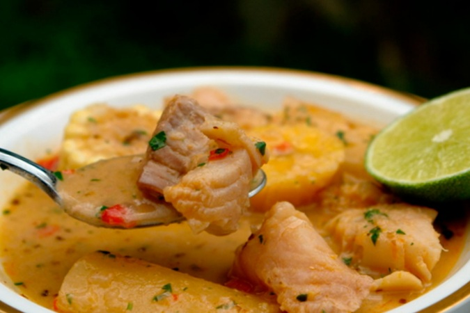

El pescado, su importancia y preparacion.
¿Qué es el sancocho de pescado?
En todos los países hispanoamericanos en los que es típico, el sancocho consiste en una especie de cocido o estofado bastante caldoso a base de carne (o menos frecuentemente pescado), tubérculos y raíces (puede ser patata, yuca, ñame o malanga) y plátano.
INGREDIENTES:
6 tazas de agua (1500 ml)
1 cubo de CALDO DE VERDURAS (10 g)
2 Mazorcas partidas cada una en 2 partes (500 g)
1/2 libra de Yuca pelada y partida en 4 trozos (250 g)
1 libra de filetes de Robalopartidos en 4 trozos (500 g)
1 cucharada de Cilantro finamente picado (10 g)
PASO 1 Cocina los ingredientes
1. En una olla de fondo alto, añade el agua y disuelve el cubo de CALDO DE VERDURAS MAGGI DOBLE GUSTO, lleva la olla a fuego medio y añade la mazorca, el plátano, la yuca y las papas partidas a la mitad, cocina por 15 minutos o hasta que todos los ingredientes estén blanditos.
PASO 2 Cocina el pescado
Por último, adiciona los filetes de pescado y cocina por 5 minutos más.
PASO 3 Prepara el picadillo
Aparte en un tazón, mezcla el cilantro con la cebolla picada.
PASO 4 Sirve
Sirve el sancocho de pescado en 6 platos en porciones iguales y espolvorea el picadillo de cilantro y cebolla encima.
Y disfruta de tu delicioso sancocho de pescado.
